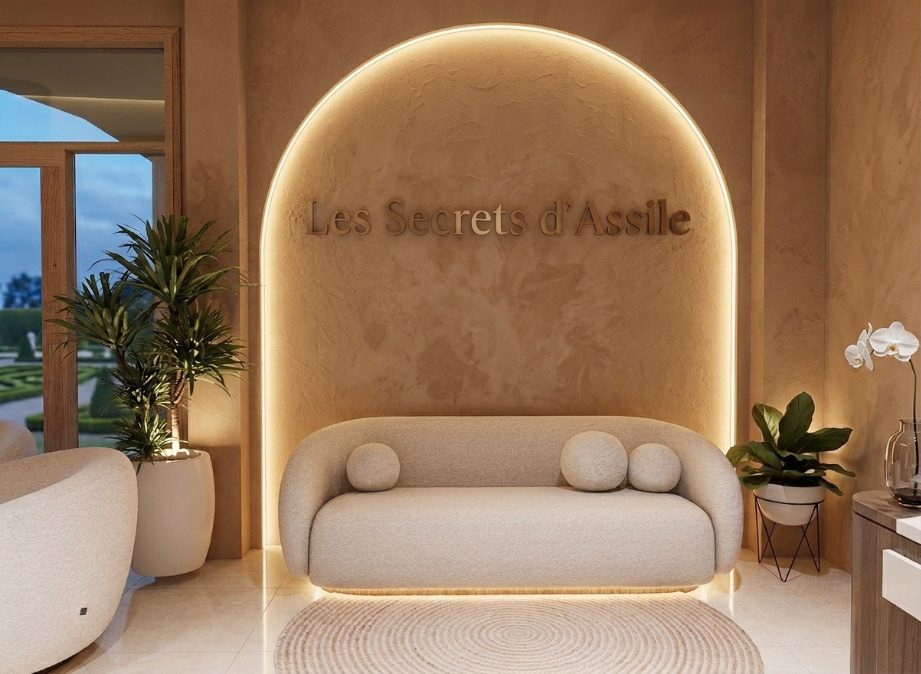
03 / 06 — Spa & Salon de coiffure
Spa &Salon de coiffure
Sept espaces, un parcours calme du comptoir à l’hammam.
01 — Concept
Conception et aménagement intérieur d'un spa avec salon de coiffure à Salé, Tabriquet, réalisé sur trois semaines en 2026. Le concept s'appuie sur un moodboard très détaillé et des vues 3D précises, avec une attention particulière portée à la conception détaillée des rangements.
L'entrée, située au sud, donne directement sur un espace d'accueil et d'attente, point de distribution principal vers les différents espaces. À droite et au centre, les activités de coiffure et de beauté — postes de coiffure, manucure, pédicure, maquillage ; à gauche, les soins plus intimes : hammam, vestiaire, épilation, extension de cils et soins du visage, complétés par un espace de rangement et un WC.
Les perspectives 3D ont permis de visualiser l'ambiance finale et de valider les choix de matériaux et de couleurs avant le début des travaux.
Plan d’aménagement
Ce plan d’aménagement présente un spa et salon de coiffure organisé selon une logique fonctionnelle et fluide. L’entrée, située au sud, donne directement sur un espace d’accueil et d’attente, qui constitue le point de distribution principal vers les différents espaces. La partie droite et centrale est consacrée aux activités de coiffure et de beauté, avec les postes de coiffure, l’espace manucure, la pédicure et le poste de maquillage. La partie gauche regroupe les espaces de soins plus intimes, notamment le hammam, le vestiaire, l’épilation ainsi que l’extension de cils et les soins du visage, complétés par un espace de rangement et un WC.
L’organisation distingue ainsi les zones ouvertes et conviviales des espaces privés et de soins, tout en assurant une circulation claire entre les différentes fonctions.
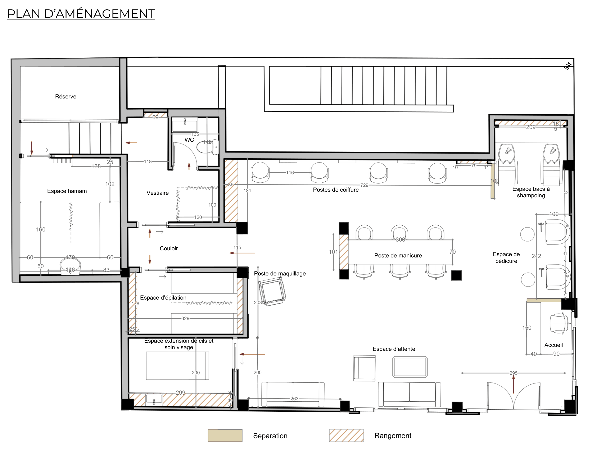
Tracé vectoriel complet : cotations, cartouches de pièces, flèches de circulation en rouge,et murs épais périphériques en gris et séparations intérieures en noir. La réserve et l’escalier occupent l’angle nord-ouest ; l’espace hamam, le vestiaire, le WC et le couloir forment l’aile des soins à l’ouest ; les postes de coiffure, bacs à shampoing, manucure, pédicure, maquillage, accueil et salle d’attente s’organisent au centre et à l’est.
Conventions du plan
- Séparation — cloison pleine
- Rangement — volume de rangement
- Circulation — flèches rouges
- Porte — arc de rotation
| Pièce | Position sur le plan | Nature |
|---|---|---|
| Accueil | Angle sud-est, en entrée | Comptoir d’accueil — 40 × 90 |
| Espace d’attente | Sud-est, en face de l’accueil | Deux canapés et deux fauteuils — 300 |
| Postes de coiffure | Paroi nord du plateau central | Quatre postes alignés — 720 |
| Espace bacs à shampoing | Angle nord-est | Deux bacs — 209 |
| Poste de manucure | Centre du plateau | Îlot à trois fauteuils — 101 × 70 |
| Espace de pédicure | Paroi est | Deux fauteuils — 100 / 242 |
| Poste de maquillage | Centre-ouest, en retrait | Table et siège — 39 |
| Vestiaire | Aile ouest, à côté du WC | Vestiaire — 118 / 188 / 102 |
| WC | Aile ouest, en aveugle | Sanitaires |
| Couloir | Aile ouest, axe vertical | Distribution des soins |
| Espace d’épilation | Sud-ouest | Table de soin — 320 |
| Espace extension de cils et soin visage | Sud-ouest, en second rang | Table de soin — 200 × 200 × 200 |
| Espace hamam | Nord-ouest, sous la réserve | Bain de vapeur — 138 / 25 / 170 / 60 / 83 |
| Réserve | Angle nord-ouest | Rangement et escalier |
Les cotes sont relevées directement sur le plan : elles sont exprimées en centimètres. L’entrée se fait par la porte double en façade sud, dimensionnée 245, avec un accès de plain-pied de 150 sur le hall.
Perspectives
Chaque zone est modélisée en 3D : arches rétroéclairées, boiseries sombres, accents verts profonds et pierre claire.
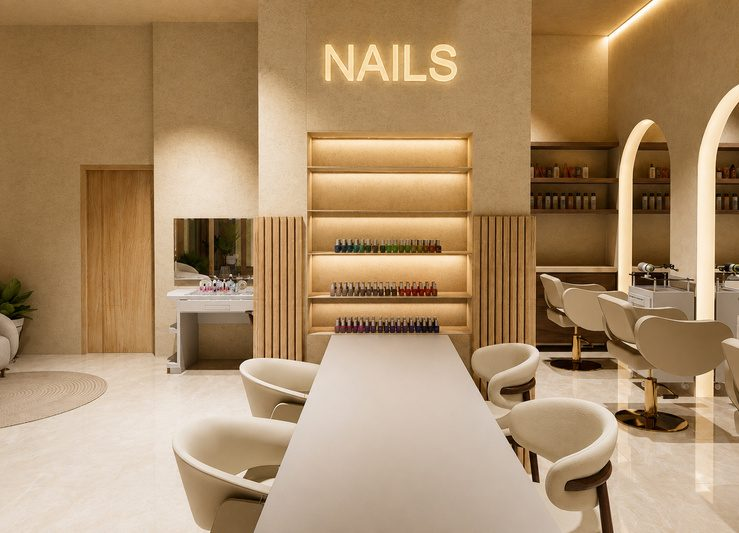
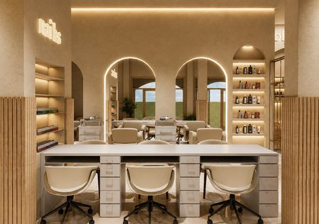
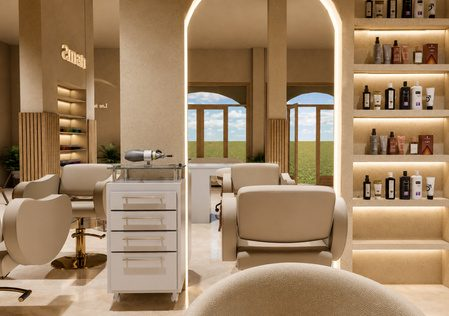
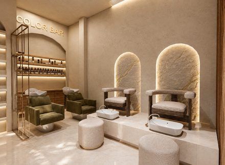
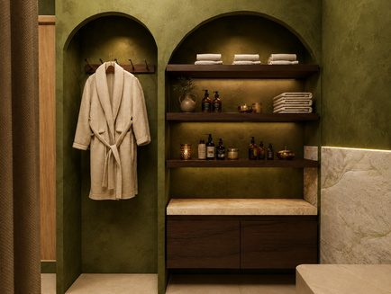
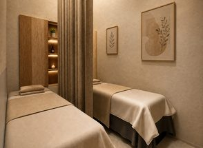
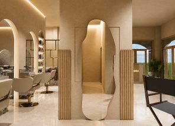
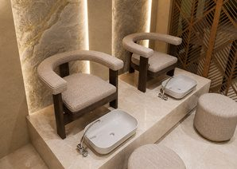
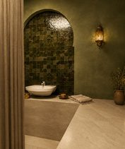
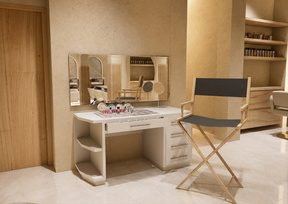
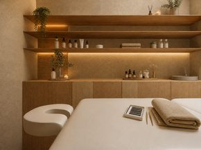

04 — Contact